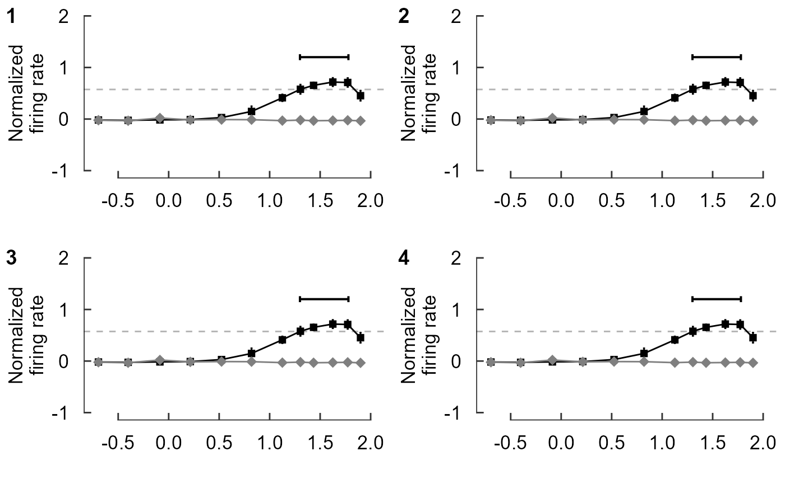
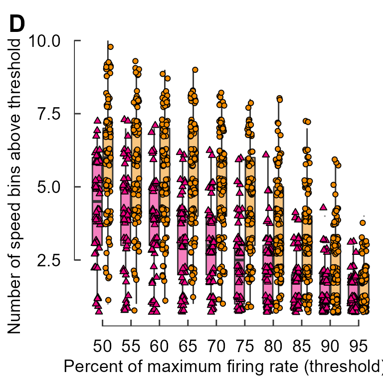
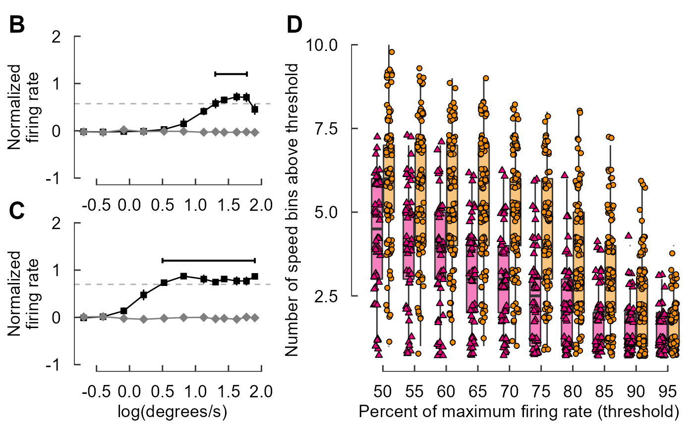
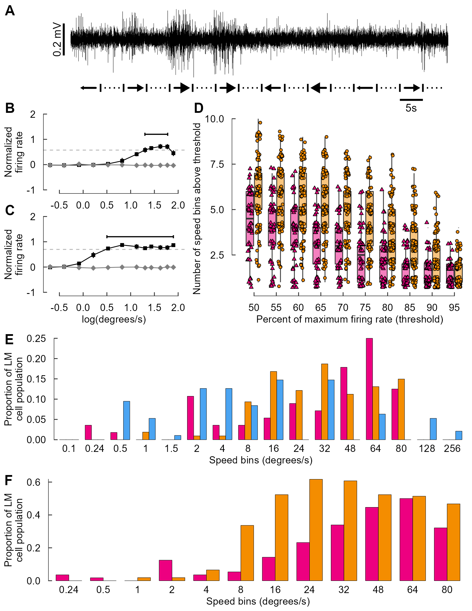
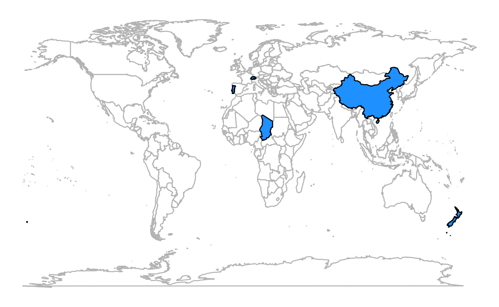

Part 3: Using cowplot to construct multi-panel figures entirely via code
by Vikram B. Baliga, Andrea Gaede and Shreeram Senthivasan
Last updated on 2022-09-23 12:18:54
Source:vignettes/group-03_Using-cowplot-multi-panel.Rmd
group-03_Using-cowplot-multi-panel.RmdIntroduction
This vignette is Part 3 of 3 for an R workshop created for BIOL 548L, a graduate-level course taught at the University of British Columbia.
When the workshop runs, we split students into three groups with successively increasing levels of difficulty. To make sense of what follows, we recommend working through (or at least looking at) Part 1’s vignette and Part 2’s vignette .
All code and contents of this vignette were written together by Vikram B. Baliga, Andrea Gaede and Shreeram Senthivasan.
The endgame: create a multi-panel plot entirely via code
Multi-panel plots can provide an elegant way to tell a visual story that is driven by narrative. One example of this is to craft a figure that (from top to bottom) first shows raw data, then how data are processed and analyzed, and then ultimately delivers a strong punchline.
We will use Figure 3 from Gaede et al. 2017 Current Biology as an example. Although the original version of this figure was made via creating individual plots in R and then stitching them together in Adobe Illustrator, in this vignette we’ll provide code that will create the entire figure.
Here’s the original figure, as seen in the paper:

Figure 3 from Gaede et al. 2017
This study examined how neurons in the lentiformis mesencephali (LM) brain region of three species of birds respond to visual motion across the retina. The species examined were Anna’s hummingbird (Calypte anna), the pigeon (Columba livia), and the zebra finch (Taeniopygia guttata).
This figure shows that in hummingbirds, these neurons respond to faster visual motion speeds than those in zebra finches or pigeons. A raw trace of neural spikes from a zebra finch is shown in panel A. Panels B, C, and D show how the raw traces can be analyzed to determine the firing rate of neurons, and how these firing rates vary with the speed of the image the bird is seeing. Ultimately, E and F characterize the distribution of firing rates for all three species and show that hummingbirds’ LM neurons respond more to higher visual speeds than the LMs of the other species.
Objectives
The specific learning objectives for this post are:
- Plan a sequence of plots that support a declarative statement of a result
- Construct a multi-panel figure using
cowplot - Evaluate which among a diversity of plotting options most effectively communicates a logical argument
Package loading and setup
Load or install&load packages
We’ll first load packages that will be necessary. The
package.check() function below is designed to first see if
each package is already installed. If any aren’t, the function then
installs them from CRAN. Then all the packages are loaded.
The code block is modified from this blog post
## Modified from:
## https://vbaliga.github.io/verify-that-r-packages-are-installed-and-loaded/
## First specify the packages of interest
packages <-
c("gapminder",
"ggplot2",
"tidyr",
"dplyr",
"tibble",
"readr",
"forcats",
"readxl",
"ggthemes",
"magick",
"grid",
"cowplot",
# ggmap and maps are optional; needed for creating maps
"ggmap",
"maps")
## Now load or install&load all packages
package.check <-
lapply(
packages,
FUN = function(x)
{
if (!require(x, character.only = TRUE))
{
install.packages(x, dependencies = TRUE,
repos = "http://cran.us.r-project.org")
library(x, character.only = TRUE)
}
}
)Data sets
You can get all data used in this vignette (and the other two vignettes!) by downloading this zip file.
Prep work for figure legends:
In prep for creating the figure, we will use the code below to import the bird head icons that appear in the legend of each panel. Please note that these images were drawn beforehand and saved as PNG files.
We will also assign each species a distinct color and create colored rectangles that will also be part of the panel legends.
When these lines run, nothing will be plotted. We’re simply importing or creating these objects so that they’re loaded in the Environment.
## Bird head icons
icon_hb <- "hummingbird.png"
icon_zb <- "zeebie.png"
icon_pg <- "pigeon.png"
## Colors for the different birds
col_hb <- "#ED0080"
col_zb <- "#F48D00"
col_pg <- "#4AA4F2"
## Rectangles within legends
rect_hb <- rectGrob(width = 2, height = 1, gp = gpar(fill = col_hb))
rect_hb_t <- rectGrob(
width = 2,
height = 1,
gp = gpar(fill = col_hb, alpha = 0.5)
)
rect_zb <- rectGrob(width = 2, height = 1, gp = gpar(fill = col_zb))
rect_zb_t <- rectGrob(
width = 2,
height = 1,
gp = gpar(fill = col_zb, alpha = 0.5)
)
rect_pg <- rectGrob(width = 2, height = 1, gp = gpar(fill = col_pg))
point_hb <- pointsGrob(
x = 0,
y = 0,
pch = 24,
size = unit(0.5, units = "char"),
gp = gpar(fill = col_hb)
)
point_zb <- pointsGrob(
x = 0,
y = 0,
pch = 21,
size = unit(0.5, units = "char"),
gp = gpar(fill = col_zb)
)First, create and save panels as separate ggplot
objects
We will first create each panel individually. To save space, we’ll hide the code that generates each plot. To see the code for each plot that follows, please see Part 2’s vignette.
A quick intro to cowplot
We’ll go over cowplot::plot_grid() basics:
- Multiple panels can be combined via
cowplot::plot_grid() - Each panel should be saved as a separate
ggplotobject beforehand and then each will be fed in as an argument toplot_grid() - Panels can be annotated and labeled
-
draw_image()&draw_grob()can also be used withggplot()andplot_grid()
Plot objects can be added sequentially
plot_grid(fig_B, fig_C)By default, additional panels are initially added within the
same row.plot_grid() then tends to prefer to have ncol
= nrow as best as possible. I’ll create an example by
pasting fig_B over and over again. Each panel will be
numbered so you can track how plots are added sequentially within
plot_grid().
plot_grid(fig_B, fig_B, fig_B,
labels=c("1","2","3"))
plot_grid(fig_B, fig_B, fig_B, fig_B,
labels=c("1","2","3","4"))
plot_grid(fig_B, fig_B, fig_B, fig_B, fig_B,
labels=c("1","2","3","4","5"))This looks okay, but we may prefer to have the plots arranged
in one column.
Let’s first just focus on panels E and F.
plot_grid(fig_E, fig_F,
ncol = 1)Cowplot also allows you to add labels to panels as you’d see in a journal article.
plot_grid(fig_E, fig_F,
ncol = 1,
labels = c("E","F"))See the arguments of cowplot::plot_grid() to see
how labels can be adjusted. We’ll adjust the size and
(temporarily) change to a serif font.
plot_grid(fig_E, fig_F,
ncol = 1,
labels = c("E","F"),
label_size = 40,
label_fontfamily = "serif")This looks horrible, but we’re using extreme values here to emphasize what is being adjusted.
Now start assemble sets of panels for each section of Fig 3
The layout of the figure is complex; nrows and
ncols can’t be set easily. Luckily we can build sets of
panels together, save each one, then stitch it all together at the
end.
Let’s start with panels E and F.
cow_EF <- plot_grid(fig_E, fig_F,
ncol = 1,
labels = c("E","F"),
label_size = 18,
label_fontfamily = "sans")
cow_EFFor panel A, we’ll adjust the padding around the
margin.
Within the argument plot.margin, the order is top, right,
bottom, left; think TRouBLe (T,R,B,L)
fig_A <- fig_A + theme(plot.margin = unit(c(5.5, 5.5, 0, 5.5), units = "pt"))
cow_A <- plot_grid(NULL, fig_A,
rel_widths = c(0.07, 0.93),
nrow = 1,
labels = c("A",""),
label_size = 18,
label_fontfamily = "sans")
cow_APanels B and C
When combining B and C, we should note that C has an x-axis label but B
does not. Therefore, we will add blank plots (NULL) as
padding and then adjust the relative heights to fit things comfortably.
We still need to supply 4 labels, so “” will be used for blank
plots.
One neat trick is that using a negative number within
rel_heights reduces space between plots (or elements). We
can use this to reduce the gap between panels if we don’t like how
cowplot handles things by default.
cow_BC <- plot_grid(NULL, fig_B, NULL, fig_C,
# A negative rel_height shrinks space between elements
rel_heights = c(0.1, 1, -0.15, 1),
ncol = 1,
label_y = 1.07,
labels = c("","B","","C"),
label_size = 18,
label_fontfamily = "sans")
cow_BCPanel D
Similarly, with panel D, we’ll add a NULL object to the
cowplot and adjust the relative heights to the proportions we’d
like.
fig_D <- fig_D + labs(y = "Number of speed bins above threshold ")
cow_D <- plot_grid(NULL, fig_D,
rel_heights = c(0.1, 1.85),
ncol = 1,
label_y = 1 + 0.07 /1.85,
labels = c("","D"),
label_size = 18,
label_fontfamily = "sans")
#> Warning: Removed 770 rows containing non-finite values (stat_boxplot).
#> Warning: Removed 770 rows containing missing values (geom_point).
cow_D
You can cowplot multiple cowplots
cow_BCD <- plot_grid(cow_BC, cow_D,
rel_widths = c(2,3),
nrow = 1)
cow_BCD
Combine all the sets of panels together
It may help to specify the dimensions of the plot window to ensure that the plot is made with correct overall proportions:
For Windows users, this should work:
try(dev.off(), silent = TRUE)
dev.new(width = 8.5, height = 11, units = "in") (You may
need to run the dev.new... line more than once)
For Mac users, qartz() seems to be the way to go. E.g.:
quartz(width = 8.5, height = 11)
Now for the plot itself:
cow_A2F <- plot_grid(cow_A, NULL, cow_BCD, cow_EF,
ncol = 1,
# A negative rel_height shrinks space between elements
rel_heights = c(1.2, -0.2, 2.5, 3),
label_size = 18,
label_fontfamily = "sans")
cow_A2F
The final step: Add icons to the multi-panel plot
The bird heads and other legend elements are conspicuously absent.
The cowplot::draw_image() function allows for an image to
be placed on the canvas, which we’ll use for the bird heads.
Similarly, cowplot::draw_grob() places grobs (GRaphical
OBjects). We’ll use this to add in colored rectangles for the
legends.
Each image’s (or grob’s) location is specified with x-
and y- coordinates. Each runs from 0 to 1, with (0,0) being the lower
left corner of the canvas.
At the moment, vectorization of the code you see below doesn’t seem possible. It’s a bit tedious (ok, VERY tedious. And un-tidy!) but it works!
cow_final <- ggdraw() +
draw_plot(cow_A2F) +
# Hummingbird heads
draw_image(image = icon_hb, x = -0.445, y = 0.445, scale = 0.060) +# Panel A
draw_image(image = icon_hb, x = -0.350, y = 0.305, scale = 0.060) +# Panel B
draw_image(image = icon_hb, x = 0.445, y = 0.280, scale = 0.060) +# Panel D
draw_image(image = icon_hb, x = -0.280, y = -0.073, scale = 0.060) +# Panel E
draw_image(image = icon_hb, x = -0.280, y = -0.313, scale = 0.060) +# Panel F
# Zebra finch heads
draw_image(image = icon_zb, x = -0.360, y = 0.135, scale = 0.052) +# Panel C
draw_image(image = icon_zb, x = 0.435, y = 0.250, scale = 0.052) +# Panel D
draw_image(image = icon_zb, x = -0.290, y = -0.100, scale = 0.052) +# Panel E
draw_image(image = icon_zb, x = -0.290, y = -0.340, scale = 0.052) +# Panel F
# Pigeon head
draw_image(image = icon_pg, x = -0.290, y = -0.130, scale = 0.055) +# Panel E
# Boxes
draw_grob(grob = rect_hb_t, x = 0.390, y = 0.280, scale = 0.010) +
draw_grob(grob = rect_zb_t, x = 0.390, y = 0.253, scale = 0.010) +
draw_grob(grob = rect_hb, x = -0.340, y = -0.073, scale = 0.010) +
draw_grob(grob = rect_zb, x = -0.340, y = -0.099, scale = 0.010) +
draw_grob(grob = rect_pg, x = -0.340, y = -0.125, scale = 0.010) +
draw_grob(grob = rect_hb, x = -0.340, y = -0.313, scale = 0.010) +
draw_grob(grob = rect_zb, x = -0.340, y = -0.337, scale = 0.010) +
# Points
draw_grob(grob = point_hb, x = 0.390, y = 0.280, scale = 0.001) +
draw_grob(grob = point_zb, x = 0.390, y = 0.253, scale = 0.001)
cow_finalAnd there you have it! We have recreated the entire figure – including annotations, icons, and inserted images – all through code.
Thanks for reading!
üê¢
Appendix: saving plots; using photos & maps
A1: Saving multi-panel plots
cowplot::save_plot() tends to work better with
multi-panel figures than ggsave() does. You can specify
size (in inches) via the arguments base_height and
base_width within save_plot().
For example:
save_plot("Gaedeetal_Fig3.svg", cow_final, base_height = 11, base_width = 8.5)
A2: Using photographs with ggplot/cowplot
Often, you may opt to add a photograph as its own panel.
Here’s a quick example:
photo <- "./photo.jpg"Now create a ggplot object that features only the image.
photo_panel <- ggdraw() + draw_image(photo, scale = 0.8)
photo_panelNow cowplot it!
plot_grid(fig_F, photo_panel, ncol = 1)
A3: Using maps with ggplot/cowplot
Adding in maps can be useful to showing geographic trends. The
maps package allows for convenient plotting of (annotated)
maps with ggplot().
Quick example. Load the ‘world’ map:
w <- map_data("world")If you’d, for whatever reason, like to highlight certain countries:
fig_map <- ggplot(w) +
# This outlines all countries in grey70
geom_polygon(aes(x = long, y = lat, group = group),
fill = "white", colour = "grey70") +
# Let's highlight some countries in dogdgerblue fill
geom_polygon(aes(x = long, y = lat, group = group),
fill = "dodgerblue", colour = "black",
data = filter(w, region %in% c("Chad", "China", "New Zealand",
"Portugal", "Switzerland"))) +
coord_fixed(1.3) +
# Nuke the theme for simplicity.
theme_nothing()
fig_map
This map can be added to a cowplot rather easily:
plot_grid(fig_map,
photo_panel,
fig_F, ncol = 1)That’s all for now. Have fun!